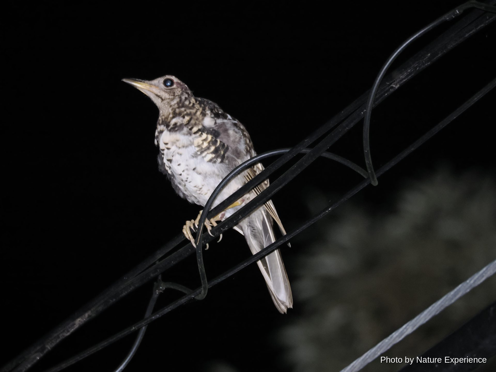
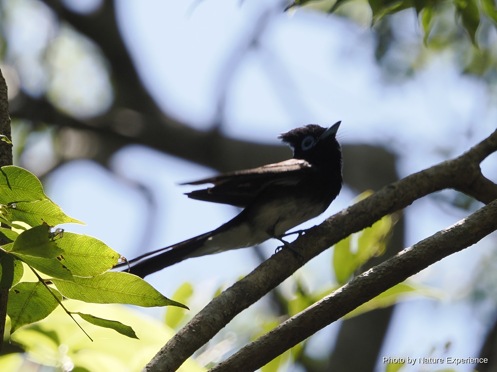
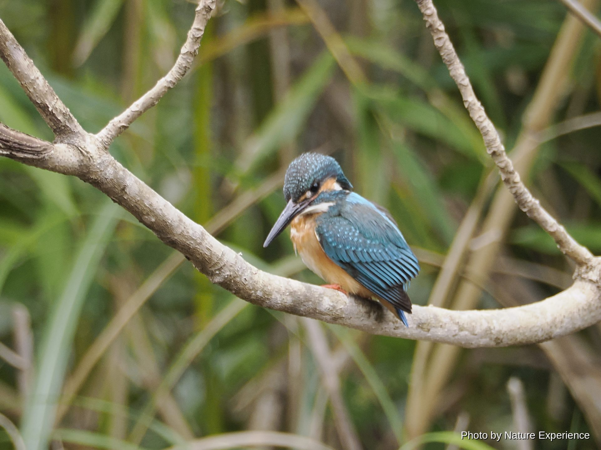
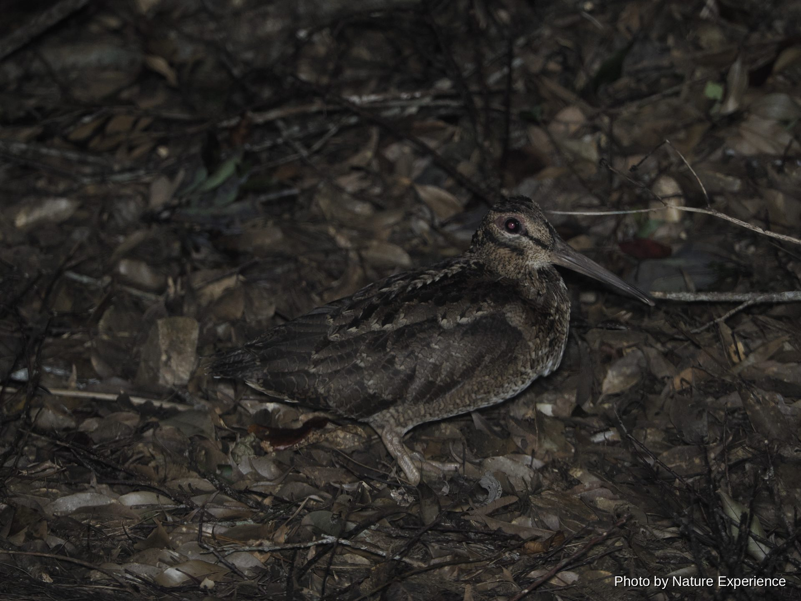
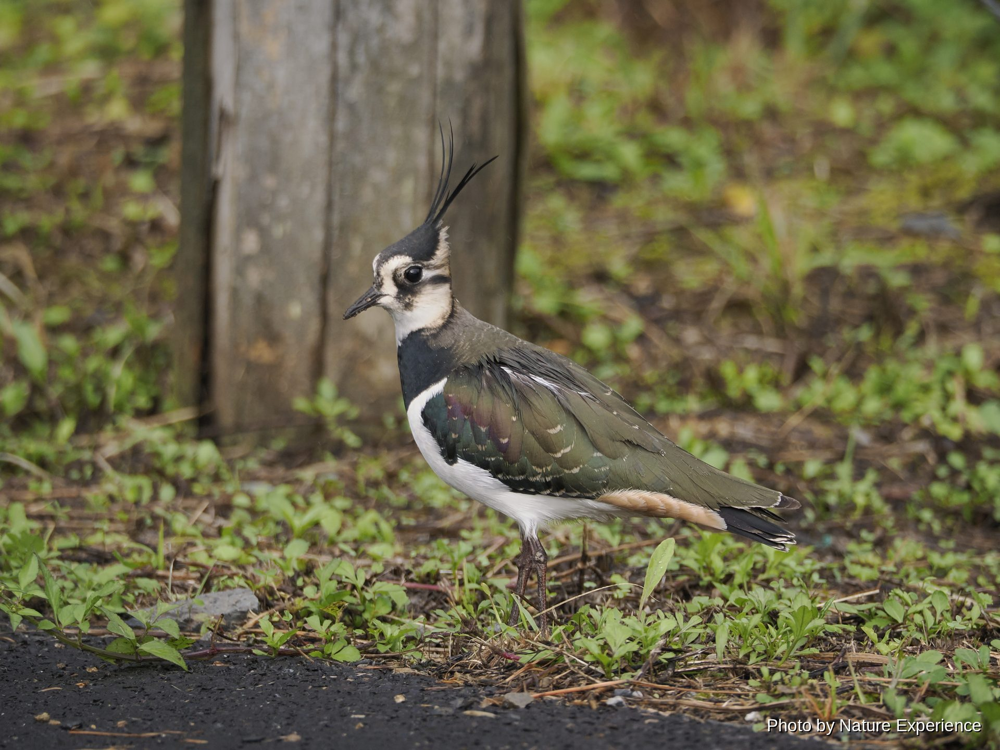

奄美で出会える鳥
スズメ目(ヒタキ・カラス・サンコウチョウの仲間)

全長約14cm 体重約18g。男女群島からトカラ列島、奄美大島とその周辺島、徳之島にかけて繁殖する日本固有種で、1970年に天然記念物に指定。奄美大島には周年生息するが、繁殖期の3月から6月頃はオスが縄張りを主張して特によくさえずるため、この時期の早朝にさえずりを頼りに探すと見つけやすい。オスは頭部・背・尾が鮮やかな橙赤色で、胸と脇の黒い部分が名前の由来である「ヒゲ」のように見える。メスは全体に地味な色合い。常緑広葉樹林の林床で昆虫などを採餌する。沖縄島北部には別種のホントウアカヒゲが生息するが、分布域は重ならない。

全長約30cm。奄美大島にのみ生息する留鳥で、黄褐色の地に虎柄のような黒い斑紋が入る。国の天然記念物、国内希少野生動植物種に指定。林齢の高い広葉樹林の薄暗い林床を好み、ミミズなどを食べる。繁殖期の2月から4月初旬には、夜明け前や夕暮れどきの薄暗い時間帯に「キョローン、ツィーッ」という澄んだ美しい声でさえずる。かつては森林伐採や外来種の影響で「幻の鳥」と言われるほど数を減らしたが、近年は森林の回復とともに生息数が回復傾向にある。

全長約38cm。奄美大島・加計呂麻島・請島にのみ生息する日本固有種で、瑠璃色の体に赤褐色の翼、白いくちばしと羽先が美しい。1921年に天然記念物に指定。常緑広葉樹林を好み、シイやカシの実を食べる雑食性。12月頃から巣作りの準備を始め、繁殖期の2月から5月頃には樹洞などに3〜7個の卵を産む。特に2月後半から4月上旬は親鳥が巣の周辺で活発に動き回るため観察のチャンスが増える。かつてはノネコやフイリマングースの捕食で数を減らしたが、2024年にマングースの根絶が宣言されるなど保護の成果が実り、近年は生息数が回復している。日中は活発に飛び回るが、夜は林道沿いの電線や枝先で休む姿を観察できる。

全長はオスが尾羽を含め約45cm、メスは約18cm。全体に黒紫色の光沢があり、目の周りとくちばしは鮮やかなコバルトブルー。オスは体長の3倍近い長い尾羽を持ち、飛翔する姿は独特。奄美大島には夏鳥として4月頃に渡来し、薄暗い林内で枝から枝へ飛び移りながら、羽虫やハチ、チョウなど飛んでいる昆虫を空中で捕らえる。鳴き声が「ツキ・ヒ・ホシ、ホイホイホイ(月・日・星、ホイホイホイ)」と聞こえることから、三つの光にちなんで「三光鳥」と名付けられた。5月から7月にかけてコケなどを使ったお椀型の巣を木の股に作り、抱卵・育雛を行う。巣立ち前のヒナがいる時期は、巣のすぐそばに長時間留まったり枝を揺らしたりすると抱卵放棄につながるおそれがあるため、双眼鏡越しに短時間観察するにとどめる。9月頃には東南アジアの越冬地へ再び渡っていく。
ブッポウソウ目(カワセミの仲間)

全長17cm、体重19〜40g程度の小型のカワセミ。頭部から背にかけて光沢のある青緑色、腹部は鮮やかな橙色で、「水辺の宝石」とも呼ばれる。奄美大島では周年生息する留鳥で、河川や水田脇の水路、ため池など様々な淡水域に現れる。水辺に張り出した枝や杭にとまって水面を見つめ、小魚やエビを見つけると勢いよく飛び込んで捕らえる。縄張り意識が強く、単独かつがいで行動し、土手や崩れた斜面の土中に横穴を掘って営巣する。繁殖期は3月から8月頃で、複数回子育てをすることもある。求愛の際にはオスがメスへ小魚を渡す「求愛給餌」が見られ、この時期は行動が活発でより観察しやすい。他の多くの鳥のように夜の森ではなく、明るい時間帯の水辺で観察しやすい数少ない鳥。

全長約27cm。全身が光沢のある赤褐色で、腰の水色の斑が飛翔時によく目立つ。奄美大島では地元で「クッカル」とも呼ばれ、「キョロロロロー」とよく通る鳴き声で親しまれている渡り鳥(夏鳥)。東南アジアの越冬地から例年4月末のゴールデンウィーク前後に渡ってきて、9月頃までに再び南へ渡っていく。カワセミの仲間だが魚はあまり食べず、カニやカエル、トカゲ、昆虫など森の生き物を幅広く捕食する。繁殖期の6月から7月にかけて樹洞やキツツキの古巣に5個ほどの卵を産み、雛は7月頃に巣立つ。この時期は親鳥が神経質になっており、営巣木に近づいたり物音を立てたり、フラッシュ撮影をしたりすると抱卵放棄や早期の巣立ちにつながるおそれがあるため、離れた場所から静かに、短時間の観察にとどめる。


チドリ目(シギ・チドリの仲間)

全長約35〜36cm。奄美群島と沖縄諸島にのみ生息する日本固有種で、奄美大島・加計呂麻島・請島・与路島・徳之島で繁殖が確認されている。近縁のヤマシギに似るが、脚が長く全体的に黒みがかり、他のシギ類よりずんぐりとした体つき。常緑広葉樹林の薄暗い林床を好み、日没から日の出にかけて活発に活動し、地面でミミズや昆虫を採る。朝夕の薄暗い時間帯や満月の夜に特に活発になる。繁殖期は2月から5月頃で、夕暮れ時にはオスが縄張りや求愛のために飛び回る「ディスプレイフライト」を行うため、この時期は姿を見つけやすい。林内の地上に営巣し、3月から5月頃に2〜4個の卵を産む。1993年に国内希少野生動植物種に指定。マングースやノネコによる捕食、森林伐採による生息地の減少が課題となっている。

全長32cm。頭には長く伸びた冠羽があり、背は光沢のある緑黒色、腹は白い。優雅な姿から「冬の貴婦人」とも呼ばれる。ユーラシア大陸で繁殖し、日本には冬鳥として飛来する。奄美大島には例年10月下旬頃から水田や畑などの開けた農耕地に姿を見せ始め、翌年3月末から4月頃まで越冬する。群れで行動し、ミミズや昆虫を土の中から探して捕食する。奄美大島の代表的な夜の森の生き物とは異なり、日中の農耕地で観察しやすい冬の使者。